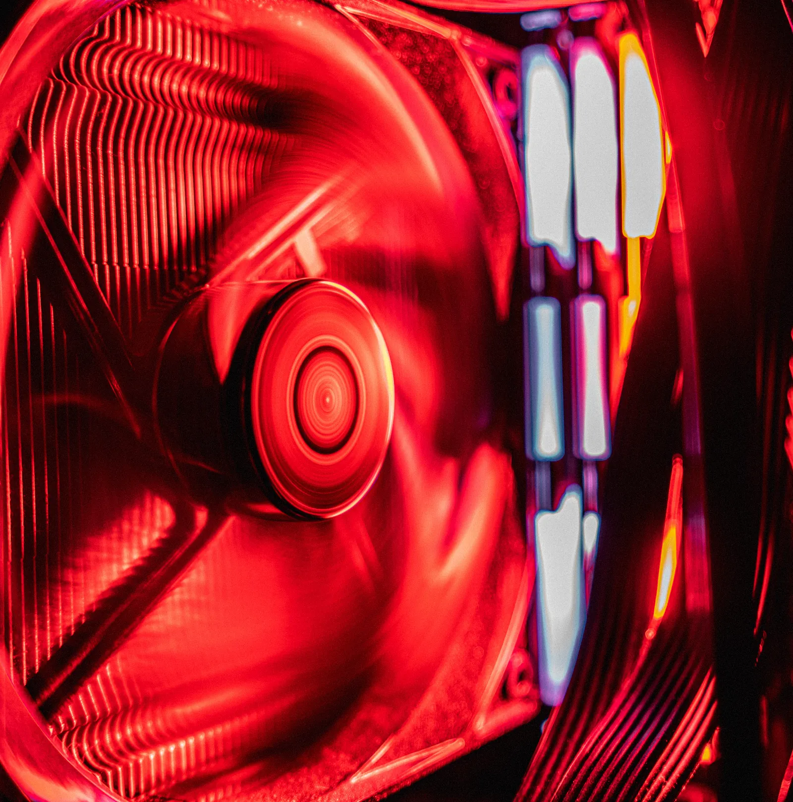
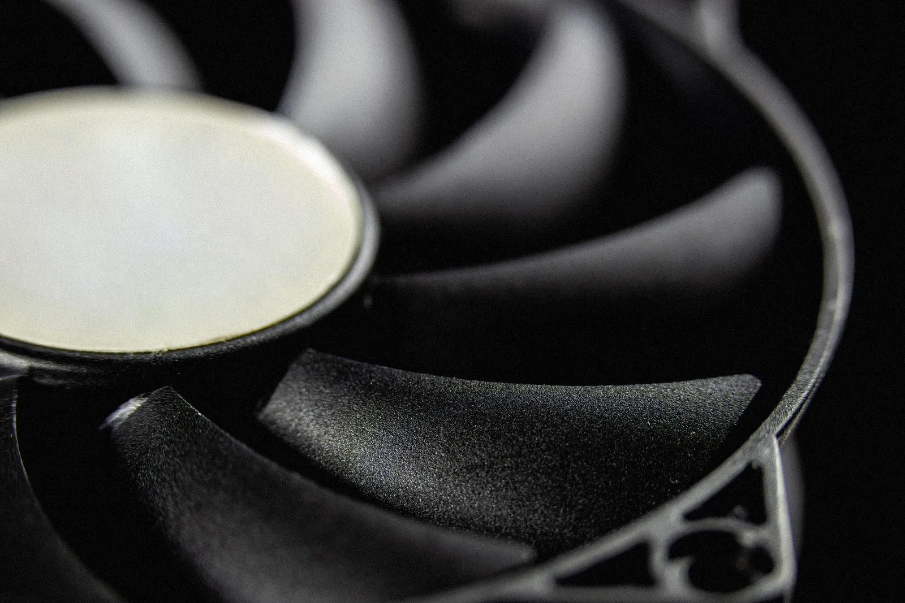
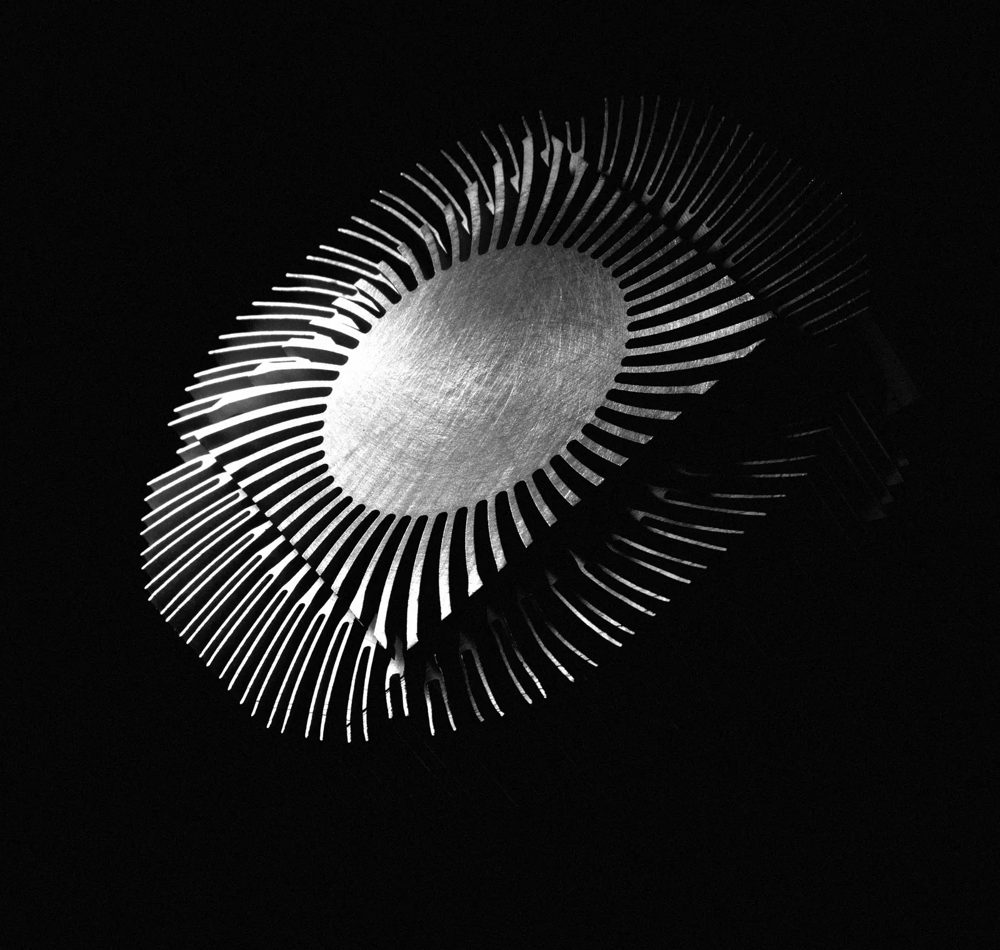
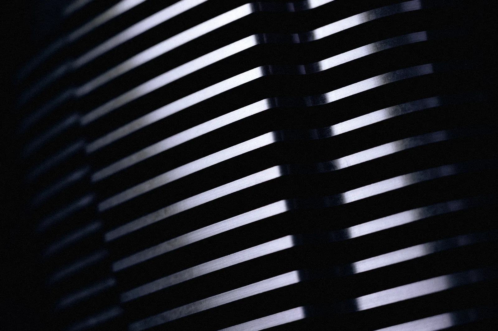

Air, onpurpose.
7 × 140 mm case fans, three on the card, no pump, no coolant, nothing to top up. The fastest way to make 900 W of heat disappear from a room is to move a lot of air through it, quietly.
The fan curve
This is the curve the readout runs on.
The dot is the machine's state right now, from the same model as the readout along the bottom. Scroll hard and watch it climb out of the quiet zone; stop, and watch it come home.
Stopped below 50 °C. Once turning, they keep turning until 46 °C so they never flutter on and off at the edge.

The arithmetic
900 W has to go somewhere.
Full load is 600 W for the card, 230 W for the processor and 70 W for everything else. Let the exhaust run 8 °C above the room and carrying that away takes 336 m³ of air an hour — 198 CFM.
After filters and the case's own resistance, the 4 intakes deliver that at 1,730 RPM, 87% of their top speed.
Air needed = heat ÷ (specific heat × density × temperature rise).

The loop we didn't ship
Four degrees wasn't worth it.
We built REDLINE twice. The second one had a 720 ml custom loop: two radiators, a pump, a reservoir, hard tubing. Under the same 72-hour burn-in it held the card 4 °C cooler.
It also wanted its coolant changed every 12 months, added a pump you can hear at idle, and gave the machine a way to fail that involves liquid. The air version won.

Noise
19 dBA at idle.
With the card's fans stopped and the case fans at their floor, REDLINE measures 19 dBA at a metre — below most rooms it will sit in. At sustained full load it's 36 dBA: you'll know it's working, and you'll still hear the person next to you.

Dust
Every intake is filtered.
Magnetic mesh on all 4 intakes, off in a second, rinsed under a tap. At month 24 we collect the machine and clean what the filters didn't catch — included, like the burn-in.